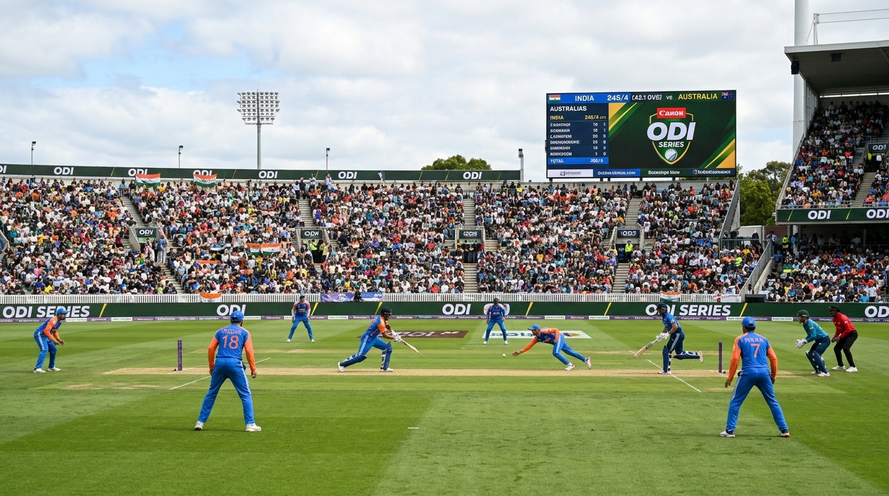

What is ODI Cricket?
One Day International (ODI) cricket is a format of the game where each team faces a fixed number of overs (usually 50) and the team with the highest score wins. In ODI cricket, the iniings are much more slower in terms of pace compared to T20 Cricket. There are also 2 powerplays to go through. The first powerplay is between overs 1-10 where only 2 fielders are allowed outside a 27m circle(approx.) and the other fielders have to stay withtin the circle. As a batter you have a better chance of getting a century(100 runs in an innings) becuase you have more time to build your innings. There are also more chances of a bowler getting a 5 wicket haul(5 wickets in an innings) because they have more overs to bowl. There are two tornaments that are played in ODI cricket. They are called the ICC Cricket World Cup and the ICC Champions Trophy. The ICC Cricket World Cup is played every 4 years and the ICC Champions Trophy is played every 2 years. India is the most successful team in ODI cricket with 2 ICC Cricket World Cup wins and 2 ICC Champions Trophy wins. The current ICC Cricket World Cup champions are Australia and the current ICC Champions Trophy winners are India.ODI cricket takes a whole day to play whcih means it will go on into the night.
Record Holders in ODI Cricket:

This cricket website is a member and proud partner with New Zealand Cricket and The International Cricket Council